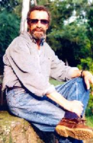

HOMENAJE A LAS LLUVIAS DEL VERANO
Autor: José Cedrón (Argentino radicado
en México) |
Yo empezaría hablando de Lluís Llach
mirándote la frente/ y seguiría diciendo
que tenés un lunar sobre tu cuello
“una mancha de sol” –me corregís–
y esto haría que lo pensáramos dos veces
sin dejar de mirarnos/ podrías encender
una lámpara azul y un Carmencita suave
y yo darte la mano y rozar tu collar
hecho de cuentas simples: vidrio, piedra, cordel.
Balbuceamos el día y ya pasaron horas/
Anderson girará por la tercera vez sin darnos cuenta
podrá llover, total, estamos en verano.
A la segunda taza de café
me detendré en los hombros y volveré a tus manos;
entonces distraerás tus ojos en los vidrios/
me dices de las flores que plantaste/ en la tierra nueva
del jardín/ seré torpe, tal vez, y no hablaré del agua/
recordaré un tranvía/ te contaré cómo eran mis zapatos/
nos cruzará una infancia por la espalda del patio/
me mostrarás la foto de tus padres/ leeremos una carta/
imitaré a mi tía/ sonreiremos.
 |
Vos pondrás algún pueblo de Turquía en mi
imaginación/
|
Ahora tu perra juega con la mancha de sol que se aleja
del día/
se asusta con las sombras/ mira seria a las moscas.
Te esperaré con cenas naturistas: calabazas al horno
verduras al gratén (“con poco aceite”)/ duraznos, piñas,
uvas con granola.
Diría que seremos comúnmente domésticos también/
probaremos conductas:
moverás un alfil desnudando mis torres/ arriesgarás la reina en
todas las partidas
(su porvenir nos tiene sin cuidado)/
llegaremos a tablas la mayor de las veces.
Aprenderé tus ruidos meticulosamente como las religiones
(desconfiando de todo mandamiento)
la forma de pisar/ la inclinación que dejas en las sandalias/
qué miradas enseñan dónde empieza la noche.
Viajaremos seguido hasta la madrugada/ tus sábanas
son amplias/ confortable tu auto/ la arena de Casitas/
las palapas humildes del Pacífico Sur/ tu blusa en los caminos.
Tendremos ocurrencias recurrencias miradas clandestinas
complicidades varias/ caricias sol arena en los cabellos/
ojeras brillantes como espadas/ nunca promesas/
ni árbol navideño/ mucho menos tarjetas con trineo/
cortinas transparentes/naturalezas muertas/ bodegones/
ni muñecas sentadas “para adornar la cama”/
ni casa compartida/ sillas Luis XV/ guantes/ ni tampoco vejez.
Sabré dónde te alejas y porqué a instantes conocidos
y misteriosamente –como un ciego– pensaré en el futuro.
Oiré tus manos lejos improvisar la noche/
volverás con galletas y caramelos Brinnen
o mejor con tostadas y canela/
morderemos y el cuerpo se sentirá en el ruido/
diremos: es un lujo la noche que nos damos.
Esas mismas palabras nos van a despedir/
te irás a Barcelona/ y no publicaremos este adiós/
será una ceremonia sin editor ni amigos.
No nos veremos nunca/ nunca más/
haremos que la muerte jamás llegue a enterarnos/
y no seremos pérdida ni engaño.
Tu foto a contraluz se quedará mirando el mar
como los fuertes/ solamente las lluvias regresarán
cada año en el verano/ le mojarán la tierra a la memoria/
tu rostro será eterno/ irrompibles las cuentas del collar.
Puebla, Pue., México
José Antonio Cedrón
El tema musical de esta página "Contigo..."mid.